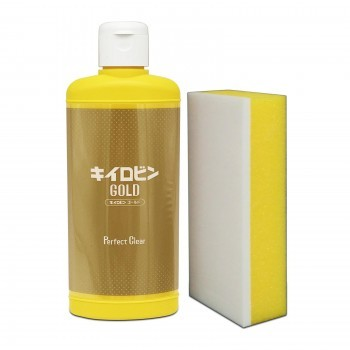

It was a lot earlier until the "end". In addition, removing unsightly fine scratches on the glass surface increases transparency, and the more you use it, the more the glass becomes beautiful.
Made in Japan. Contents: 7.1 oz (200 g). Product Size: Height: 6.7 inches (171 mm). Width: 2.7 inches (69 mm). Depth: 2.5 inches (64 mm).
This glass cleaner is specially designed to really realize that you can experience a quick "torchi” cleaning of oil film, film, film, glass coatings.
Accessories: Dedicated sponge, perfect for pre-processing of window glass coating. Great for removing old coats and preprocessing coats. Includes a dedicated sponge.
Made by professional staff of domestic automotive chemical and car wash supplies.
Features: This is a new high-grade version from Kiilovin that eliminates the glare of glass film, and a glass cleaner that truly allows you to experience the quick "Tea Aji" of glass cleaner.
Can remove cancer oils, coats, and glass coats at approximately twice the speed of conventional products.
The secret of removing the speed of removing glass nano powder and cerium oxide. By fusing it, oil is oily. The film and film have been improved significantly faster until the "start to remove" has been cleaned.
By removing unsightly fine scratches on the glass surface, the more you use it, the glass becomes more beautiful and the more you use it.
Specifications: Contents: 7.1 oz (200 g). Accessories: Dedicated sponge, ingredients, polishing agent, glass-based nano powder.
Disassemble and wash dirt to keep your car clean and clean.